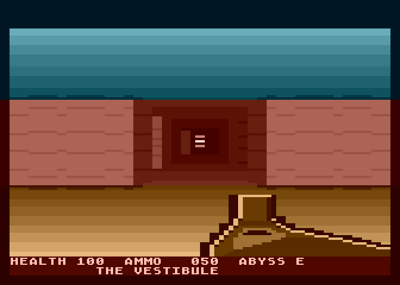
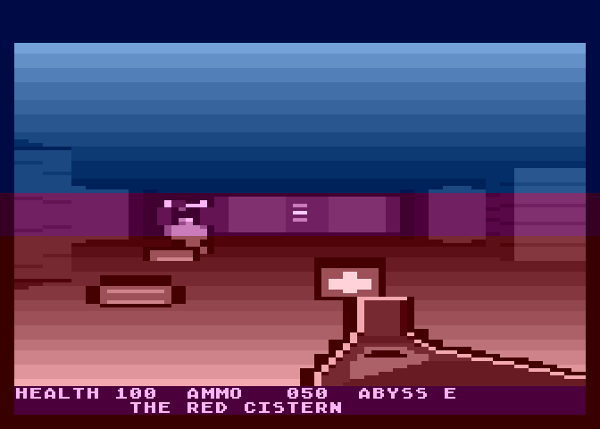
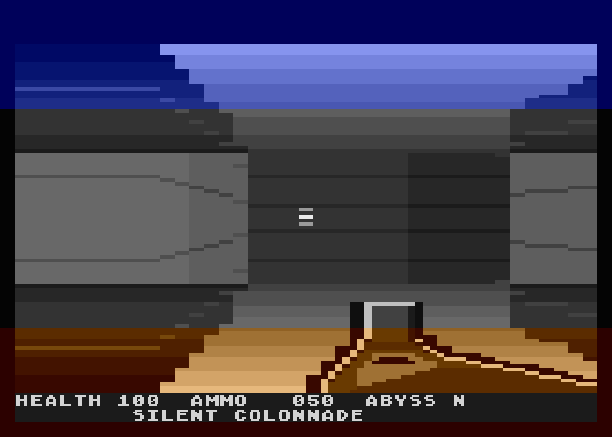
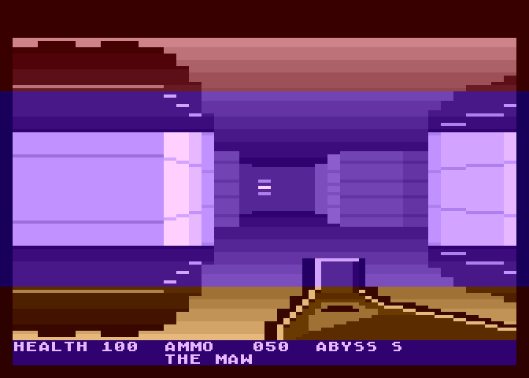
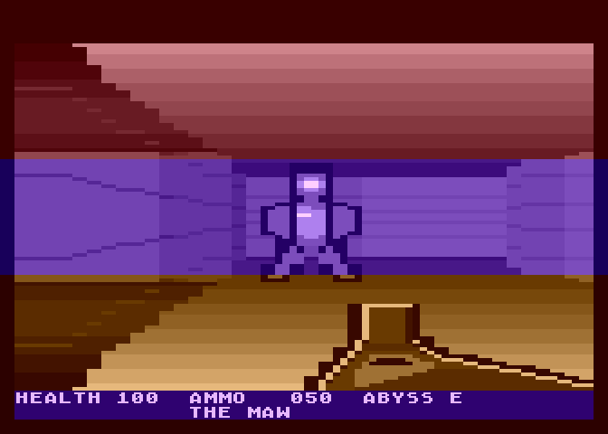
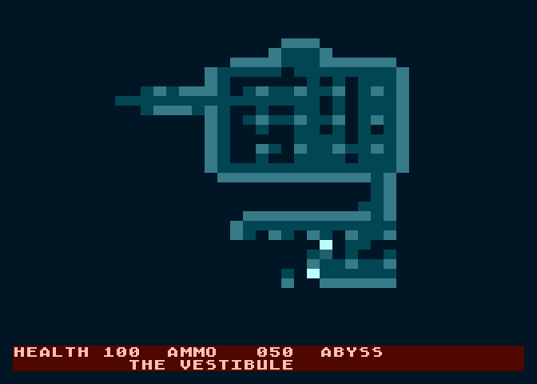
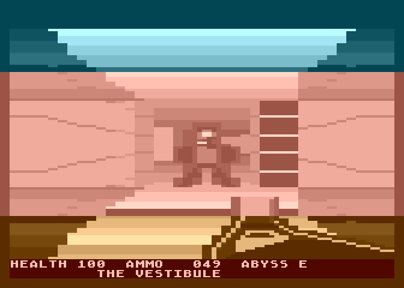

FOUR FLOORS DOWN, NO WAY UP
A DOOM-flavoured first-person shooter for a 1983 Atari 800XL · 6502 assembly · 29 KB · built in one night · runs on the real thing
This is the real game — byte-for-byte the same 30,126-byte executable that runs on the hardware, here running in an Atari 800XL emulator compiled to WebAssembly. PAL, with sound: an audio engine that for most of this game's life was verified only as POKEY register traces, never actually heard.
You are somewhere under the world with a shotgun and a map that starts out blank. Four floors lie below you, each with one way down, and the way down is the only way on. There is no strafe, no run key and no use key — doors open because you walked into them. Everything you need is here; the full manual has the rest.
| Walk forward / back | ↑ ↓ or W S |
| Turn | ← → or A D |
| Fire | SPACE or X |
| Hold for the map | M or Tab |
| On a real Atari | joystick port 1, START for the map |
Fire is also the carry-on button — it starts the game, clears every banner and restarts you when you die. Whenever the game is waiting, it is waiting for fire, and it says so on screen.
Two letters on the right of the status line, reading to eight points:
HEALTH 100 AMMO 050 ABYSS SE
Worth more than it looks. Every hall down here is a regular grid of pillars, so once you have turned round twice inside one there is nothing in the view to tell you which way you came in — the compass is the thing that tells you. It shares its north with the map: N on the status line is up on the map screen, so turn until it reads N and you are walking up the map. It steps aside while a message is up, and comes back when it clears.
| A bright cell with a smaller one beside it | you, and your facing |
| The brightest cell on the map | the way down |
| Brighter than the walls | a door |
| Brighter still | a locked door |
Hold M and the floor plan comes up, showing every wall you have laid eyes on and every stretch of floor you have looked across. Everything else is black — the far side of a hall you crossed without turning round is not on it. Reading it is free in blood (the world stops) and expensive in par (the run clock does not). It will not find things for you: secrets are drawn as plain stone, and enemies are not drawn at all. Dying wipes it, like everything else on the floor.
| Two cells or less | 60 damage |
| Three to five cells | 28 damage |
| Further than that | 12 — a peppering |
The same shell is five times deadlier at point-blank. A husk takes one blast in the face or five across a room; the hulk takes two, or ten. Backing away and plinking is the most expensive way to kill anything here. And every shot is loud: it wakes whatever is within three cells.
Doors open when you walk into them — there is a deliberate beat before you step through. Locked doors are coloured, and answer with a latch click rather than the sound of a door. That click means you need a key, not this is a wall — and the key is always somewhere on the floor you are already standing on.
The exit is a doorway that breathes. Nothing else in this world moves by
itself, so it is unmistakable once it is in front of you. Walk onto it, the status line changes
to FIRE TO DESCEND, and the trigger drops you a floor.
| Medkit | +25 health, max 100 |
| Shells | +15, max 99 |
| Par for the whole descent | 11:00 |
Dying puts you back at the start of the floor you died on — doors shut, items back, empty hands, full health. The asymmetry that decides runs: health follows you down, ammunition does not. Every floor hands you a fresh 50 shells whatever you had left, so hoarding them is throwing them away — but nothing heals you between floors, and a medkit you walked past on the first floor is health you do not have on the fourth.
Four hand-authored floors, five monsters apiece, every one placed and typed by the level files. THE VESTIBULE is husks only — one point-blank blast each. Gunners, frailer but quicker on the trigger, start on the second floor. The single hulk waits at the bottom: two shells up close, ten from across a room, and a third taller than anything above it. A shotgun with range-banded damage, a muzzle flash that lights the room rather than replacing it, and a real exit on every floor, proven reachable by a test that walks there.







An Atari 800XL has a 1.77 MHz 6502 and 64 KB of RAM. A full-screen repaint costs more than a frame. Every part of this is a small measured decision:
Columns are painted by JSR-ing into unrolled store chains at a computed
offset. The entry point is the run length: no loop counter, no compare per pixel,
no overdraw. Five cycles a pixel is the floor for a 6502, and this sits on it.
Two clocks, not one. The world redraws at ~10.2 fps, but input, the weapon, the kick, the bob, audio and the HUD all run in the vertical-blank interrupt at 50 Hz and never wait. Pull the trigger and the gun fires on the next video frame. The parts you feel are never on the slow path.
GTIA mode 9 ORs each pixel into the background colour's low nibble — which every reference says to keep at zero. Writing a single bit there instead lifts the whole picture: a full-screen muzzle flash, four register writes, in a mode with no business having one.
Every screenshot on this page is generated by a tool that asserts each frame against the game state it claims to show. The acceptance sweep path-finds to every exit, plays the whole game through, and soaks it for 60,000 frames. The DEVLOG records every wrong turn.
Built overnight, 31 July 2026, by Claude and Tony Gillett — an experiment in how close an 8-bit machine can get to the feel of DOOM, with an emulator harness measuring every step. Then it met real hardware.
Three modules lived at $A000–$BFFF: the BASIC ROM's address space on a real XL. The emulator boots with BASIC off; the hardware boots with it on. 130 green test runs never stood a chance of seeing it. Fixed with an eight-byte stub that banks the ROM out before anything loads.
The display list asked ANTIC for 248 scanlines against a hard limit of 240 — playfield DMA running where the vertical sync should be. The emulator renders a fixed window and simply clipped it; a CRT rolls. Two of the four status rows were blank anyway. Now 232.
1 August 2026: the fixed build boots, locks and plays on the real 800XL, off an SD card, on a CRT. Both fixes are now assertions in the test sweep, and the question they left behind is the project's best souvenir: not does it pass? but what can this harness not see, even in principle?
The bestiary, the knockback, the lava, the redrawn fireballs and masonry that finally recedes with distance — all confirmed on the same CRT, including a renderer change and a memory reshuffle, the riskiest edits of the lot.
The mortar courses now follow the perspective of the wall rather than running parallel to the horizontal, so they converge toward the vanishing point down a corridor. And the hue seam follows the walls: mode 9 allows only one hue per scanline, but the seams no longer sit at fixed rows, so 99.5% of a near wall carries the wall's own colour instead of 56%. Both were measured before they were believed, and both are now confirmed on the CRT. Nothing on this page is emulator-only.